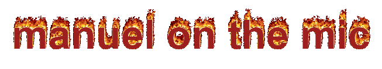
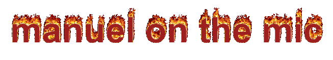
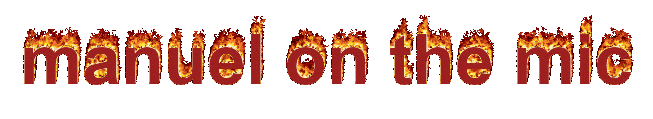

"thats what she said"
"im gonna have a stroke"
"anyway, are you getting factorio ?"
"i lost my left ball in vietnam in 1982"
"yeppers"
"i warned you, i dont want spaghetti again"
"wel you know what they say"
"you either eat the fork or the fork eats you"
"sweaty balls"
"11 million tylenols"
